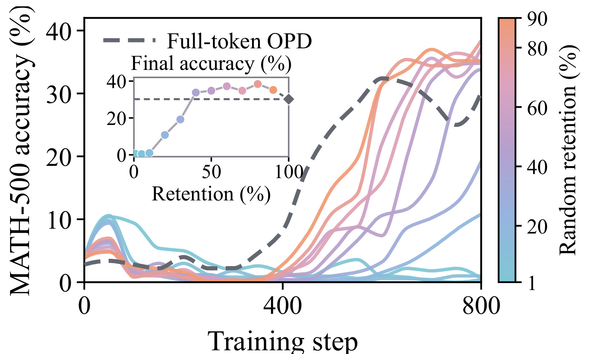
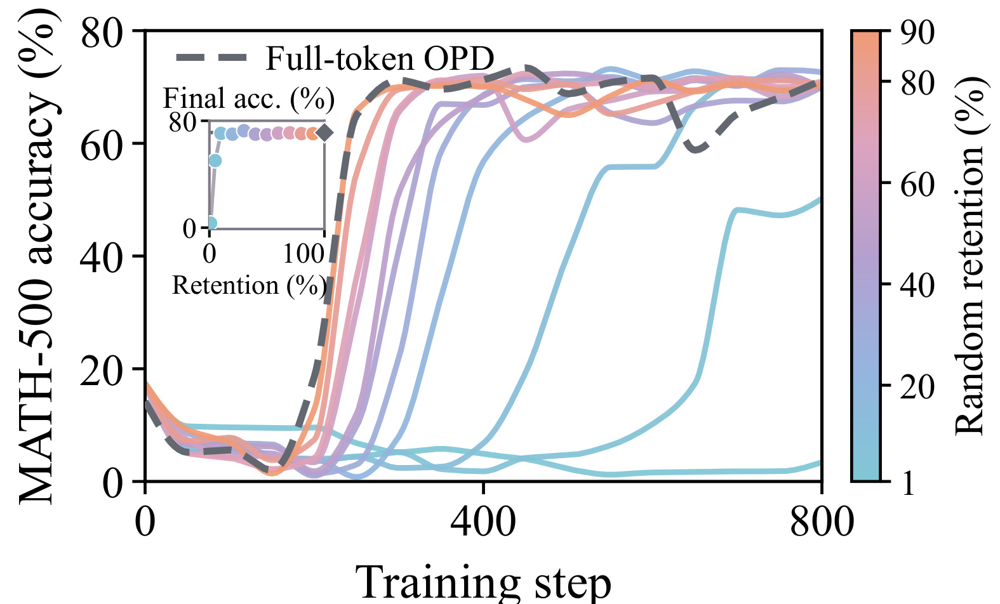
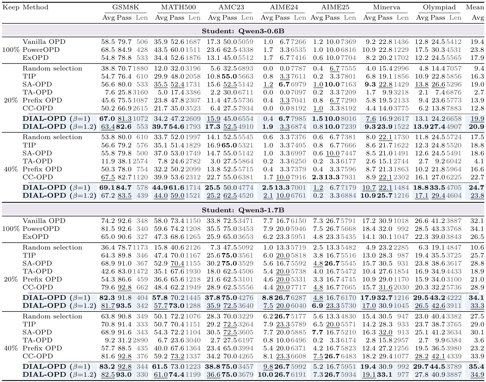
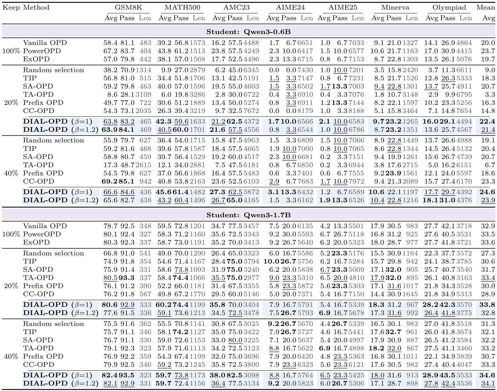
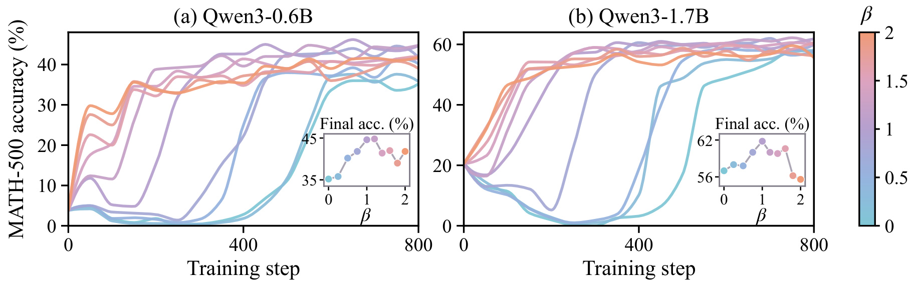
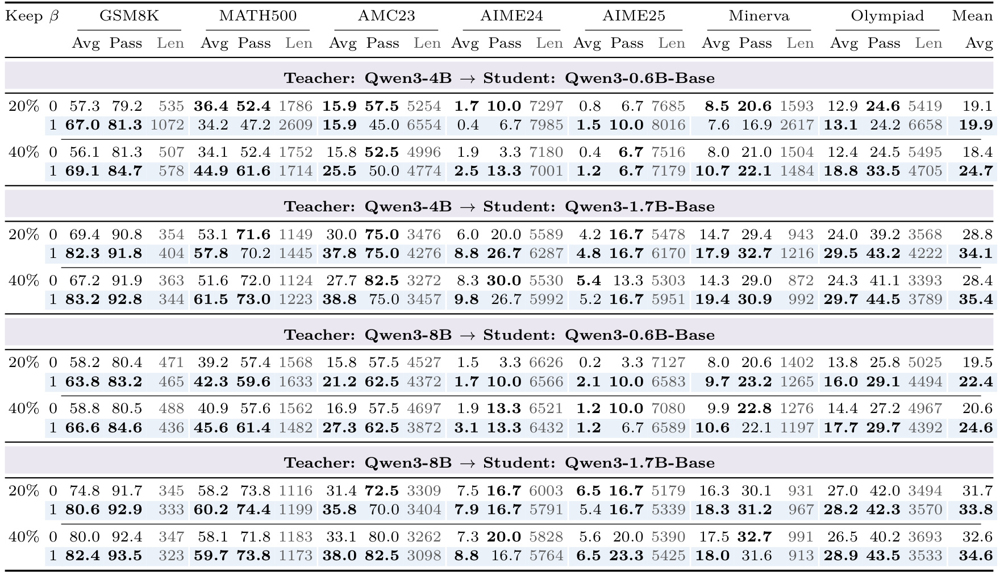
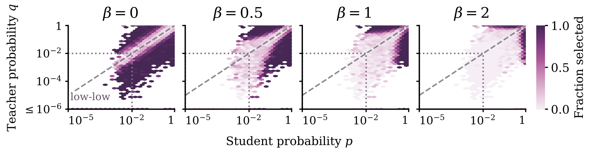
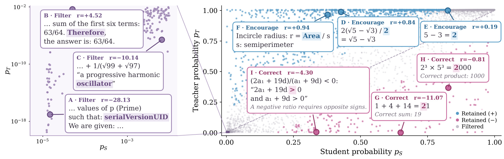

DIAL-OPD：在策略蒸馏中，把监督分配给真正值得学习的 token
DIAL-OPD 研究大模型的在策略蒸馏：学生先生成自己的回答，教师在同一上下文中评价学生采样的 token，学生再据此更新。Anhao Zhao 为第一作者，主要机构为宁波东方理工大学 EIT-NLP Lab，合作机构包括香港理工大学、香港科技大学广州、上海交通大学、香港大学和滑铁卢大学。论文于 2026 年 10 月 8 日公开，论文入口为 arXiv 官方页面，本文依据二十页主文及附录阅读，访问与核验日期为 2026 年 10 月 12 日。论文首页提示了 EIT-NLP/DIAL-OPD 代码仓库，但协调者本轮访问对应 GitHub 地址返回 HTTP 404，不能据此声称代码已公开可用；本文没有复现训练。
学生容量有限，监督更多 token 并不必然带来更好的学习。只按师生对数概率比的大小挑选 token，会把双方都认为几乎不可能的内容与教师强烈支持的内容视为同样有价值，因而让低概率、低价值的监督占据更新预算。
1. 背景和问题
在策略蒸馏之所以值得研究，是因为学生部署时见到的是自己生成的前缀，而普通离线蒸馏让它反复学习教师生成的完整答案。后一种方式在训练阶段接触的状态分布，与学生真实生成时进入的状态分布可能不同：一旦某个早期 token 出错，学生需要在带错误的前缀中继续推理，却未必在离线教师答案上学过这种状态。OPD 让当前学生先生成轨迹，再由固定教师在这些实际访问过的上下文里提供指导，缓解这种暴露偏差。它也比只在最后检查答案正确性的奖励更密集，能对中间推理提供局部方向。这是本文的任务背景，但作者没有主张每个教师评判都等同于正确的推理标签。
完整形式的 OPD 在每个位置比较教师和学生整个词表上的概率分布。对于词表很大的语言模型，把每个位置的教师全词表概率算出来、保存并在训练节点间传输，会带来计算、内存和通信负担。因此实用系统常采用 sampled-token OPD：只查询学生实际采到的 token 在教师下的对数概率，与学生自己的对数概率相减，形成一个带符号的局部奖励。这样每个位置只保留一个概率信号，付出的代价是它成为师生分布差异的单样本估计。作者真正质疑的是这个更实际的估计器里，密集监督是否仍应该被当成默认最优方案，而不是质疑所有形式的知识蒸馏。

Figure 1 使用 Qwen3-4B 教师与 Qwen3-0.6B-Base 学生，横轴为训练步数，纵轴为 MATH-500 准确率，颜色表示在每条学生回答中随机保留的 token 比例。虚线是保留所有合格位置的 Vanilla OPD，对照的彩色曲线从极稀疏监督一直覆盖到高保留比例；右上角小图把最终成绩与比例并列。最有信息量的结果不是某条曲线先上升，而是在相同更新步数下，百分之四十到九十的随机监督都能超过全量监督，百分之八十保留时达到百分之三十八点四，全量则为百分之三十点二，相差八点二个百分点。极低比例也明显不够，说明减少监督并非越少越好。所有未选位置仍在生成上下文里，作者没有删除整段推理；变化只发生在参与损失的位置。这个对照建立了一个具体动机：对容量有限的小学生，单样本监督中有些信号可能稀释有用更新，因此需要考虑分配而非只考虑增加密度。该图评估每道题只采一次，不能直接与后面多次采样主表中的指标混读。

Figure 2 保持教师为 Qwen3-4B，把学生改为 Qwen3-4B-Base，仍在同一数据和更新预算下扫描随机保留比例。坐标轴与 Figure 1 一致，但准确率范围更高，最小保留比例的曲线仍明显落后。正文给出的精确读法是百分之十保留已接近全量成绩，分别为百分之七十点六和七十一点二，而百分之三十保留可达到七十二点六。它让容量假说更细致：较小学生上观察到的强收益与容量差距有关，但“稀疏监督可能更好”并不完全依赖教师参数量大于学生。引言对等规模实验的概括略显简化，本文依照第三节正文中的数值保留这个边界。图中的提升幅度没有小学生那么大，不能把两个条件等同。更不能由随机少选位置推断知识已被无损压缩，因为极稀疏位置的结果仍差，而且随机选择缺乏学习价值的辨别能力。等规模对照的意义，是排除“只要把学生做大就不需要考虑监督质量”这种过强解释，接下来仍需要找到与位置内容相关的选择准则。
作者接着试验最自然的准则：挑师生分歧最大的 token。对于 sampled-token OPD，奖励绝对值就是两者对数概率差的大小，因而可以直接比较 Reward-Top、Reward-Bottom 和随机选择。原文 Figure 3 在百分之十、十五和二十保留时，Reward-Top 的最终 MATH-500 准确率分别为百分之二十五点六、三十点四和三十四点四，优于另外两种选择，但前三百五十步几乎没有进步，并且未必胜过全量 OPD。这一步非常关键：它表明分歧确实提供信息，但“大分歧”等于“好学习目标”的推断还缺少一个条件。已有准则会优先选到学生不擅长的 token，其中既包括该纠正的错误，也可能包括几乎不具备可信监督意义的随机尾部。
症结在于对数比只反映相对变化，不区分绝对尺度。若学生和教师概率分别为零点零八与零点八，两者相差十倍，教师对该 token 有很强支持；若分别为万分之一与千分之一，也是十倍，但双方都几乎不支持它。两组都产生相同的对数奖励。论文把学生与教师概率均不超过百分之一的位置称为 low-low token。这是诊断时使用的阈值，不是 DIAL-OPD 最终打分中的硬开关。按 Reward-Top 选择时，这些位置只占少量 token，却能占据很大一部分奖励质量：在百分之十、十五、二十保留下，其 token 份额依次为百分之二十点五九、十三点四九、十点二六，但绝对奖励份额达到百分之四十九点八零、四十一点四三、三十八点零一。不同分母必须区分，前者数位置，后者累加奖励大小，不能理解为低低区域接近一半 token。
作者不仅画了相关性，还做了有控制的替换实验。在固定保留数和原始带符号损失下，移除已选 low-low token，改用未选、非 low-low 且奖励排名最高的位置。随机替换对照则移除相同数量的随机已选位置，补位时不排除 low-low。定向替换最终得到百分之三十八点四、三十七点六、四十点八，较对应 Reward-Top 提升十二点八、七点二、六点四个百分点，也优于随机替换。因而不能只用“少学一点正则化更好”解释改善：保留比例没有改变，改变的是监督的组成。对数学推理小模型，这种尾部位置可能把很大的梯度注意力花在与解题不相干的内容上。本文后续的选择函数就是要保留有用分歧，同时识别分歧发生的概率尺度；它与推荐中的样本分配问题有启发性的联系，但当前证据仍属于语言模型数学推理蒸馏。
2. 方法
2.1 对数概率与概率空间的桥接
先明确作者保留的 OPD 对象。对训练提示采样学生回答，每个位置的上下文由提示和已生成前缀组成。完整的逆向 KL 目标包含每个回答中全部生成位置，而不是只比较最终答案，也不是把教师生成的答案作为固定标签。DIAL的改动发生在后续位置选择，下面先保留这一完整对象，才能看清哪些条件沿用、哪些监督项被改变：
符号解释：学生策略为 $\pi_\theta$，固定教师为 $\pi_T$，提示为 $x$，学生生成轨迹为 $y$，$c_t=(x,y_{<t})$，$D_{\mathrm{KL}}$ 是词表上的逆向 KL。附录 C 特别强调，实际更新在求导时固定 rollout 的上下文分布，而不是把整个序列分布的所有依赖都反向传播。这个限制决定下式的无偏性究竟指向哪一个更新方向：
符号解释：$r_t^{\mathrm{OPD}}$ 是教师与学生对实际采样 token 的对数概率比，$g_{\mathrm{OPD}}$ 是固定上下文条件逆向 KL 的下降方向。教师更支持该 token 时奖励为正，学生过度支持时奖励为负；实现中奖励停止梯度。正文 Eq.2 与附录 C 的推导指出，奖励对学生参数的显式依赖已在解析 KL 梯度中处理，额外项由概率归一化抵消。不能再次直接对奖励求导，也不能把这个结论扩大为包含轨迹分布导数的完整序列目标无偏估计。选择子集之后，优化也有意改变了监督分配，本文没有证明其仍是原始全量目标的无偏估计。
核心改动是给这个相对分歧加上绝对尺度。令采样 token 的学生概率为 $p_t$，教师概率为 $q_t$，引入对数均值：
符号解释：$u$ 在零与一之间均匀遍历两个对数概率的插值，指数化后得到介于两者之间的概率；$L$ 是这些概率的平均。两者相等时取连续极限 $L(p,p)=p$。它不是算术均值，也不是另一个完整词表散度，只需要两个实际 token 的概率。当两者都很小，所有插值位置都很小，因此均值自然很小；无需先判断一个人为硬阈值。
符号解释：$s_{\beta,t}$ 是仅用于排序的非负学习价值分数，$\beta$ 调节概率尺度的影响。后半式来自对数均值的闭式，是正文 Eq.4—5 的同一准则；当概率相等时分数按连续解释为零，不能直接在包含负指数的重写式中计算零除零。选择分数与训练奖励承担不同职责：前者挑位置，后者仍保持原来的正负号。$\beta=0$ 退化为绝对奖励排序，$\beta=1$ 变成绝对概率差，中间值在两者间进行几何插值。这是一个轻量的监督分配器，输入仅为已有 OPD 所需的两项 token 概率，输出是可供后续截断排序的分数，不引入额外语义判别模型。数值实现应在对数空间保留稳定性、给相等概率分支安全处理，这是从公式推导出的复现注意事项，原文未提供可验证实现性能。
2.2 概率权重的两种极限性质
作者用两个命题解释为何这个“旋钮”不能只朝着更强抑制的方向拧。第一种情况是保持师生概率比例不变，同时把双方的概率都按同一个系数缩小：
符号解释：$\varepsilon$ 为共同尺度变化，$p,q$ 为原先两项概率。比值保持不变，所以奖励不变；对数均值却被等比例缩小，于是评分多了 $\varepsilon^\beta$。这就是正文 Eq.6，附录 E.1 从积分定义证明了均值的齐次性。奖励排序完全看不见这种变化，而任意正 $\beta$ 都会压低双方同时低概率的位置。对前面的十倍概率例子，这个性质说明二者虽然相对分歧相同，仍可得到不同排序。它不是关于真实推理意义的语义定理，只说明评分对绝对尺度敏感，因此需要实验支持其与学习价值的联系。
第二种情况更加重要：保持其中一个模型对 token 的支持为固定正常值，让另一个概率接近零。此时可能是学生漏掉教师非常支持的必要推理步骤，也可能是学生严重高估教师不支持的错误。论文证明：
符号解释：$a>0$ 为固定一侧概率，$b$ 为趋近零的另一侧概率，评分对两种方向对称。这是正文 Eq.7，附录 E.2 通过 $(a-b)^\beta[\log(a/b)]^{1-\beta}$ 的渐近形式证明。强抑制低低 token 的同时，过大权重也可能压掉仅一侧低概率的有效纠错。$\beta=1$ 在这个极限下保留有限非零信号，低于一保留发散的极端分歧，高于一则最终使它消失。有限实际概率下并不意味着大于一的分数都等于零，命题说的是极限。这个分析解释了实验为何应扫描权重，而不能凭“噪声越少越好”直接选最大值；它也说明排名标准对称并不代表训练方向对称，后面保留的 signed reward 仍区分增强和抑制。
2.3 按回答选位置与带符号蒸馏更新
DIAL-OPD 在每条回答内部固定保留比例，不能把长回答的分数与短回答混在一起全批次抢名额。每个候选集合排除提示、padding 和终止 EOS，其他生成 token 都可进入选择。输出名额按回答的有效长度确定，而不是按最强奖励的绝对阈值确定；这让不同方法在匹配比例时能对照监督密度，同时避免简单阈值造成有的回答完全没有更新：
符号解释：$V_i$ 是回答 $i$ 的合格位置，$\rho$ 为保留比例，$K_i$ 是要保留的数量，$S_i^\star$ 等价于该回答内分数最高的前 $K_i$ 个位置，$m$ 是二值掩码。正文 Eq.8 设定至少保留一个位置，以免短回答没有监督。该排序是每步根据当前学生的新 rollout 重新计算，因而不会把最初学生的学习价值判断永久固定下来。未选 token 留在前缀中，教师和学生仍按完整生成上下文评价后续 token，这一点与直接裁掉思考链或提前终止生成不同。
符号解释：$B$ 为训练批，$M_B$ 为批内全部入选位置数，$\operatorname{sg}$ 表示停止梯度；掩码在求导期间也固定。正文 Eq.9 的归一化按入选 token 计，而非为每条回答等权平均。因此短长回答都按各自比例选，最终损失仍可能受回答长度构成影响。被教师低估的错误位置以负奖励降低学生概率，被教师支持的位置以正奖励提高学生概率；没有把绝对评分错误地变成全为正的奖励。这是整个方法必须保留的训练语义。
从上一模块到这里的连接很直接：两个概率给出尺度敏感分数，分数给出固定大小的集合，集合仅控制原始损失在哪些位置发生。方法不改变部署时学生的生成结构，推理时也不需要查询教师或运行 token 选择器。它减少的是监督位置的密度，训练 rollout 本身仍完整生成，而选分数之前也需要评估所有候选位置。百分之四十保留不等于总体训练成本减少百分之六十，因为生成、教师评分、学生前向以及不少反向计算都可能仍按整条序列付费；论文没有给出墙钟、GPU 时或通信量的完整效率测量。就原文而言，最稳妥的价值陈述是相同训练更新预算下，把有限监督容量更好地分配给部分位置，从而提高最终推理准确率。
3. 实验结果
3.1 四组师生、七个基准与指标分母
主实验使用 Qwen3-0.6B-Base 与 Qwen3-1.7B-Base 两种学生，教师为指令调优的 Qwen3-4B 和 Qwen3-8B，组合成四组师生。训练数据为 DeepScaleR，固定八百步，AdamW、BF16、学习率五乘十的负七次方、批大小三十二。训练回答最多一千零二十四个 token，采样温度一点零，top-p 零点九五，top-k 二十。所有方法统一排除提示、填充和最终 EOS 的损失。主结果表为每个基准同时报告 Avg、Pass 和 Len：Avg 是全部采样回答的平均正确性，Pass 是一道题多次采样中至少一次正确的成功比例，Len 是平均回答长度；Mean 则是七个基准 Avg 的无权平均，不按题目数量加权，也不是七个 Pass 的平均。
GSM8K、MATH-500 与 OlympiadBench 每题采四个回答，Minerva Math 每题八个，AMC23、AIME24、AIME25 每题十六个，评估温度零点六、top-p 零点九五。因而 AIME25 Pass@16 的分母是题目数，先判断该题十六次中是否至少一次成功；Avg@16 的分母则覆盖采样回答。给出“翻倍”时必须标明是哪一个，不能把多次尝试成功率当成单次可靠率。在密度诊断中，作者用每题一次采样、每五十步检查 MATH-500，且回答最多四千零九十六 token。诊断图与主表数值不完全相同，有评估协议差异，不应把图中某个终点硬替换成表格数值。
九种基线包含 Vanilla OPD、Random、PowerOPD、ExOPD、TIP、SA-OPD、TA-OPD、Prefix OPD 与 CC-OPD。PowerOPD 处理奖励幅度，DIAL 则选择位置，两者不是同一改动。对选择方法，作者按每条回答匹配二十或四十的保留百分比；这很重要，否则保留更多位置本身会混淆质量比较。不过有些基线按原方法做了适配：SA-OPD 改用输入依赖排序，Prefix OPD 保留完整 rollout 的前段而不提前停生成，CC-OPD 因教师强化学习前检查点不可得，改用同家族较小指令模型作为参考。结果因此是统一约束下的实现对比，不能视为对这些方法全部原始训练策略的终局评价。
3.2 主结果与教师规模比较

Table 1 上半部分是零点六十亿参数学生，下半部分是一点七十亿学生；每部分先列全量基线，再列二十和四十的保留百分比，横向每个数据集都有平均正确率、至少一次成功率与长度，最右为七项平均正确率。对小学生、四十保留、权重为一，Mean 从 Vanilla 的百分之十九点四左右提升到二十四点七，作者用未四舍五入均值计算最大五点二五个百分点提升；PowerOPD 为二十三点八，所以超过更强全量参考的幅度小于超过 Vanilla 的幅度。对一点七十亿学生，同设置为三十五点四，Vanilla 为三十二点一，PowerOPD 为三十四点一，作者报告对后者的一点二四个百分点改善。在二十保留的一点七十亿学生中，DIAL 为三十四点一、CC-OPD 为二十八点九，对应最大五点二三个百分点优势。但不是每个单项最佳：例如小学生二十保留下，GSM8K 大幅变好，MATH-500 与一些困难竞赛指标未同样改善。因而主张应落在跨基准均值与匹配条件上，不能写成所有题型全面胜出。表中四舍五入值适合比较趋势，精确百分点以原文正文为准。
还可以沿着 Table 1 的同一比例检查究竟比哪一种选择强。四十保留、小学生条件下，最强的现有选择基线是 CC-OPD，Mean 约二十二点七，而 DIAL 权重一为二十四点七；一点七十亿学生下两者约三十三点九与三十五点四。这些差距小于对 Vanilla 的差距，体现较强基线已经吸收一部分收益。二十保留、小学生的 GSM8K 中，DIAL 约六十七点零，而 SA-OPD 约五十六点六，正文据未取整结果报十点三三个百分点。与此同时，小学生四十保留在 AMC23 的 Avg 为二十五点五，但 Pass 仅五十点零，有的竞争设置 Pass 更高，说明平均采样质量与至少一次成功可以向不同方向变化。判断一行是否更好必须先确定使用场景追求的是一次生成可靠性还是多次尝试搜索成功，不能只盯着加粗数字。

Table 2 保持相同布局，把教师扩大到八十亿参数。在小学生、四十保留、权重一时，Mean 为二十四点六，超过 Vanilla 的二十点零及 PowerOPD 的二十三点七；一点七十亿学生该设置为三十四点六，高于 Vanilla 的三十二点九与最强全量参考 ExOPD 的三十三点六。最醒目的 AIME25 翻倍发生在八十亿教师、一点七十亿学生、四十保留、权重一点二：Vanilla Pass@16 为百分之十三点三三，DIAL 为二十六点六七，提升十三点三三个百分点。它与四十亿教师、小学生的最大均值提升不是同一实验，不能拼成一套配置同时得到所有最佳数值。该配置 AIME25 Avg 约为六点零，Vanilla 约四点二，多次采样成功率改善不等于单次概率翻倍。主表还记录长短不一的回答，部分低保留设置生成更长文本，这提醒读者把准确率收益与生成成本分别评估。跨教师规模的结果比较进一步说明，增大教师不会自动消除 token 分配问题，但也没有证明较小教师在所有任务都更划算。
把两张表的相同学生规模跨教师比较，四十亿教师的 DIAL、四十保留、权重一得到精确均值百分之二十四点六八和三十五点三六。作者称它们超过八十亿教师最强全量参考零点九五及一点七六个百分点。这是很有实践意义的受控结果：在这个模型家族、数据和更新预算下，对已有教师信号做更好的分配，可获得超过简单教师扩大的收益。但训练只包含一个模型家族，教师指令调优方式与学生初始化也固定，结论不能推广为参数规模不重要。最适合的用法是把分配准则列为教师规模实验的一条独立轴，同时比较同教师全量、随机稀疏、奖励排序与尺度感知排序，而不是先更换更大教师后把原损失的问题隐藏在更强信号里。
3.3 权重扫描与概率尺度的独立贡献

Figure 6 固定四十亿教师、四十保留百分比，左图为零点六十亿学生、右图为一点七十亿学生，颜色从权重零到二，横轴训练步数、纵轴 MATH-500 准确率。小插图展示终点随权重的变化，使得曲线何时启动与最终结果可以分开读。权重零对应只按奖励选，大部分早期曲线停滞较久；提升到一附近后，进步更早出现，最终准确率也提高。正文报小学生从百分之三十五点二到四十四点六，权重一点二峰值四十四点八；大一点学生在权重一达到六十一点八，零为五十七点零，一点二为六十点零。两种模型的最优旋钮位置并不严格相同，因此把一解释成所有场景默认最优超参数没有足够依据。图支持的是适中概率权重较好，而非抑制越强越好。其早期曲线变化与原先低低尾部妨碍学习的诊断一致，但训练曲线的视觉改善没有给出置信区间，也不能替代多随机种子统计。读图时还需避免与主表多采样协议的 MATH-500 平均值逐点比较。
扫描实际包含零、零点二五、零点五、零点七五、一、一点二、一点四、一点六、一点八、二，因而既有连接奖励排序与概率差排序的区间，也有检验过强概率权重的区间。左图的一点二略高于一，差值只有零点二个百分点；右图反而在一之后下降，作者没有给出统计误差，因此不宜围绕左图微小峰值推导精确普适常数。观察早期时，两种学生的零权重曲线都延迟启动，而权重增大后有些曲线早早提升却终点更低，说明“学习更快”和“最后学得更好”也需分开。固定保留比例使改善不能解释为某组收到更多监督位置，但评分改变会引导学生生成分布继续变化。后续若比较达到目标准确率所需时间，应按每组实际生成长度和每步耗时计费，不能只用图中的步数交点宣称加速。

Table 3 位于附录 D，把四种师生、两个保留比例逐一配对，比较权重零与一。它隔离了关键因素：比例保持不变，原始 signed reward 保持不变，改变的是概率尺度参与排序。四十亿教师、一点七十亿学生、四十保留时，Mean 从约二十八点四升至三十五点四，原文报告六点九六个百分点，GSM8K Avg@4 从六十七点二到八十三点二，精确提升十五点九六个百分点。这比只比较 DIAL 与 Vanilla 更直接验证了新评分的贡献。与此同时，小学生、四十亿教师、二十保留时，均值只是十九点一到十九点九，且 MATH-500 从三十六点四降到三十四点二。表明概率尺度虽然总体有效，也可能把某些困难题需要的分歧筛掉，收益依赖比例与学生条件。它不是纯粹“去噪后各项都涨”的消融。表里长度也会改变，说明相同监督数比例未保证同样输出分布，复现实验仍需检查长度限制、正确答案解析和统计波动。
按表中的另外两组师生也能读到不同的边际收益：八十亿教师到小学生、四十保留时，零权重的均值约二十点六，一权重二十四点六；八十亿教师到一点七十亿学生则从三十二点六到三十四点六。它们都改善，但增幅明显不同于四十亿教师到大一点学生的六点九六个百分点，表明教师规模不是概率权重收益的简单线性决定因素。表头中每项的 Avg、Pass、Len 同时保留，使读者能检查提升是否伴随更长回答。例如四十亿教师到小学生、二十保留时，GSM8K 长度由五百三十五增到一千零七十二，约翻倍，而四十保留的同模型设置长度变化小得多。这不反驳位置选择有效，但说明只看平均准确率不能区分监督组成、后续生成行为与预算的相互作用。消融最严格支持的是同训练配方与比例下加入尺度信息的结果改善，而非所有资源条件下都占优。
3.4 选择分布、推理案例与成本空白

Figure 7 在相同的一百二十八条 DeepScaleR 回答上固定百分之二十保留，横轴为学生概率、纵轴为教师概率，均用对数尺度，六边形颜色表示该概率区域有多大比例被选入，而不是 token 数量。虚线界定双方都不超过百分之一的低低区域，极小的教师概率在展示时合并处理。四个面板的权重从零、零点五、一到二，可以看到纯奖励选择在低低区域仍有较高选择率，而权重一把更多名额移向具有真实概率支持的分歧。低低 token 在已选集合中的份额从百分之八点二六降到零点二九，权重二进一步到零点零二。但是最后一个面板也压低一侧概率较高、另一侧较低的位置，正对应方法章第二命题的风险。图中的固定样本只用来分析选择行为，不能独立证明某区域对解题贡献多少；它与训练消融共同构成证据。最值得注意的是，优良结果对应有选择地压低尾部，而不是把概率差异全部收窄，强过滤会同时损失必要的纠正信号。
图中合并的教师极低概率为不超过百万分之一的部分，这只是可视化处理，不能把底部一条色带误认为算法用硬阈值过滤了一整类位置。正式分数仍是连续函数，低低区域的百分之一界限也只是解释标签。颜色是该格里被选 token 的比例，格内样本总数并没有直接显示，因而深色区域可能是高选择率的少量位置，不能凭面积或颜色积分得到总体监督占比；正文的百分之八点二六等份额来自另外统计。四张面板使用相同回答与相同比例，消除了不同生成样本导致的形状变化，所以可以把分布迁移归因于旋钮排序。即便如此，这个静态分析没有描画整个八百步中所有回答：随着学生更新，概率会改变，下一步位置集合也会刷新。它证明一次固定候选集合上抑制发生在哪里，长期行为仍需结合训练曲线和主表。

Figure 8 左侧把低低区域放大到对数坐标，右侧用普通概率坐标呈现更高支持位置。蓝色为正奖励保留，粉色为负奖励保留，灰色为过滤，标注框给出具体前缀与 token 语义。无关的程序标识符 serialVersionUID 得到负二十八点一三的巨大负奖励，但数学题里它不承担有效推理；重复导向已得答案的 Therefore 得到正四点五二，也被过滤。相比之下，内切圆半径公式的 Area 以正零点九四被保留，错误乘法中的数字以负零点八一受到纠正。案例说明奖励强弱和推理价值不完全同步，并且选择器仍保留正、负两种学习方向。图中另有错误求和、符号条件与平方根化简案例，体现的不只是删除异常字符，也包括数值与逻辑局部监督。不过这些是作者选出的解释案例，没有给出所有被删除 token 的语义类别、错误率与人工标注一致性，不能把概率尺度等同于理解了推理意义。它提供机制直觉，广泛收益仍应主要依据前面的跨模型主表和固定比例消融判断。
本文没有独立延迟、吞吐、显存或训练 GPU 时间表，也没有线上验证。选百分之四十的位置会减少参与目标的监督项，却不意味着教师只评分这些位置，因为必须先知道全部候选概率才能排名；学生 rollout 和前缀上下文也保持完整。Prefix OPD 在本实验里同样没有提前截断生成，这使比较更公平地聚焦位置价值，但也让论文不足以比较两类方法在真实系统中的节省。效率结论应留为空白并标注未验证，而不能从 token 数代算。对计算预算紧张的训练平台，应该在复现时按 rollout、教师评估、学生更新、排序与通信分别计时，再判断收益究竟来自更高终点准确率、更快达到目标，还是减少某一段开销。
4. 总结
4.1 对本文贡献的判断
DIAL-OPD 最值得保留的是一个可验证的判断链：随机减少监督有时更好，说明密度不是充分条件；大绝对奖励优于小奖励和随机，但仍出现长停滞，说明分歧不是充分条件；低低位置贡献过大的奖励份额，定向替换又优于随机替换，说明绝对概率尺度具有独立解释力；最后用一个有明晰边界性质的函数把尺度和分歧连接起来。相比只报告一个稀疏损失的新最好成绩，这些受控诊断让读者知道为什么选择器值得试。对数均值既提供连续旋钮，也让“共同低概率”和“单侧强分歧”两类情况可以通过命题区分，这是本文技术结构最清楚的部分。
我的判断是，它适合成为 sampled-token OPD 的低侵入对照，而非先验替换所有蒸馏损失。部署生成路径没有增加模块，训练时的额外对象只是每位置分数和掩码，但收益与概率校准、学生容量、保留比例及教师质量相关。若把它迁移到推荐生成器，例如模型生成物品标识或解释文本，可类比研究“相对分歧大但双方绝对支持低”的位置是否值得更新；然而物品词表、标识语义、曝光选择偏差与语言 token 不同，当前论文没有推荐数据，迁移只能作为待验证假设。先从已有语言推理蒸馏基线复现，再考虑跨任务试验，比直接拿数学 benchmark 的均值预测推荐指标更可信。
4.2 局限和下一步验证
第一，实验限于 Qwen3 家族、两种小学生与两个教师，所有训练使用 DeepScaleR；不同架构或更强学生的容量瓶颈未得到系统验证。第二，七个评测都围绕数学推理，没有代码、知识问答、长上下文、工具使用或多轮代理，无法证明它会保留其他任务关键 token。第三，主要结果缺乏明确的多种子误差条与统计显著性报告，尤其竞赛题集上的 Pass@16 数字可能受样本量影响，翻倍需要结合绝对题数和波动理解。第四，没有端到端效率测量，稀疏监督的系统开销收益未验证。第五，部分竞争方法被适配为统一比例，尤其参考教师检查点不可得的 CC-OPD，比较并非逐项忠实复现全部原设计。第六，概率尺度是学习价值代理，教师同样可能错，低低语义案例是解释性选择，并没有证明所有尾部都应该删除。
后续最先做三类验证。其一，在相同初始化、数据顺序、生成长度和三种以上随机种子下，复现全量、随机、奖励排序与 DIAL 四条轴，同时保存每题结果，报告 Avg 与 Pass 的区间，确认均值提升不是评估采样漂移。其二，联合扫描保留比例与概率权重，检查短长回答、不同难度题和最终答案位置的选择率，尤其关注一侧强支持的必要数字或逻辑条件是否被强权重误删；这会决定超参数能否跨学生迁移。其三，进行分阶段计时与资源测量，统计教师评分量、学生反向耗时、rollout 长度变化和达到目标准确率的总 GPU 时间，避免把监督项数量误认成成本。这三类验证还应保存概率、奖励和选中掩码的逐步统计，便于区分模型学得更好与选择分布恰好更有利的情形。代码入口目前返回不可用，应先等待或重新核验官方公开实现，再进行可追溯复现；公开实现可用之前，不应宣称已在训练框架中完成低成本部署。